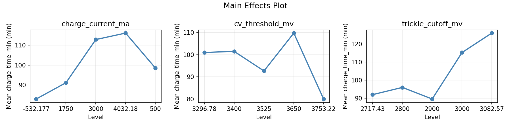
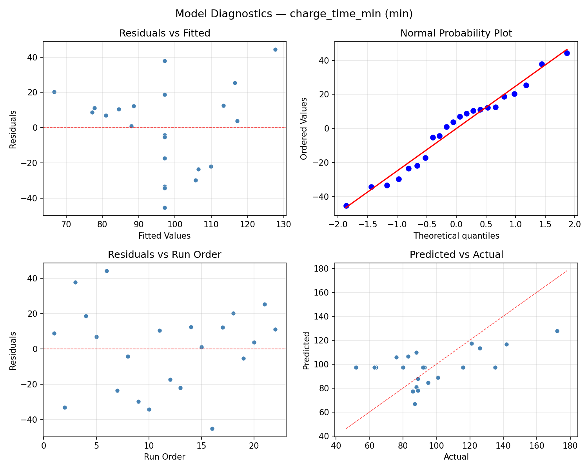
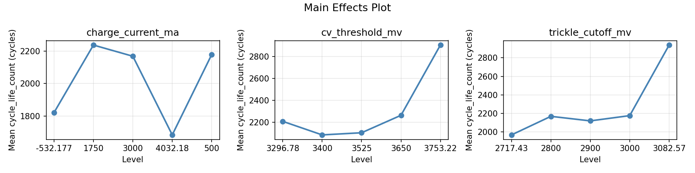
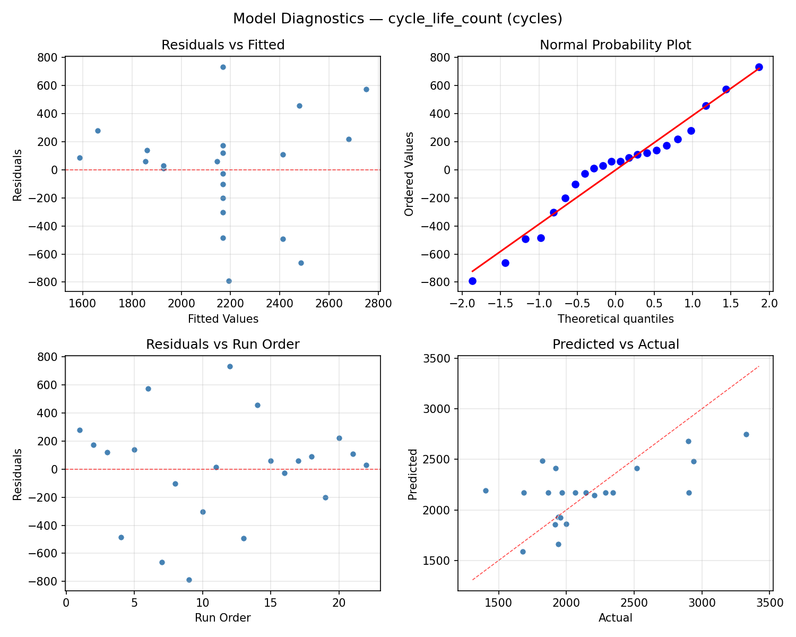
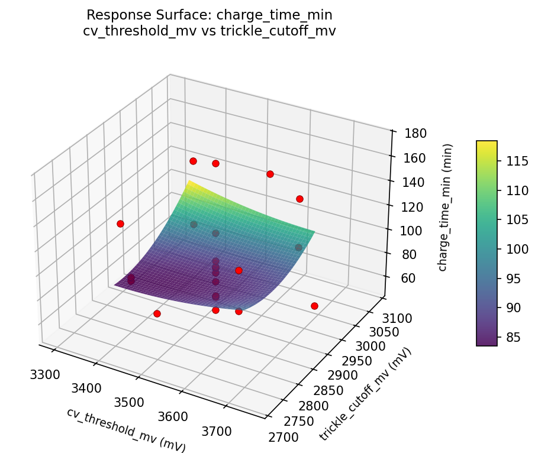

Summary
This experiment investigates battery management charging. Central Composite design to optimize charge current, CV threshold, and trickle cutoff for charge time and cycle life.
The design varies 3 factors: charge current ma (mA), ranging from 500 to 3000, cv threshold mv (mV), ranging from 3400 to 3650, and trickle cutoff mv (mV), ranging from 2800 to 3000. The goal is to optimize 2 responses: charge time min (min) (minimize) and cycle life count (cycles) (maximize). Fixed conditions held constant across all runs include chemistry = lifepo4, cell count = 4s.
A Central Composite Design (CCD) was selected to fit a full quadratic response surface model, including curvature and interaction effects. With 3 factors this produces 22 runs including center points and axial (star) points that extend beyond the factorial range.
Quadratic response surface models were fitted to capture potential curvature and factor interactions. The RSM contour plots below visualize how pairs of factors jointly affect each response.
Key Findings
For charge time min, the most influential factors were cv threshold mv (45.9%), trickle cutoff mv (33.3%), charge current ma (20.8%). The best observed value was 52.0 (at charge current ma = 1750, cv threshold mv = 3525, trickle cutoff mv = 3082.57).
For cycle life count, the most influential factors were cv threshold mv (47.7%), trickle cutoff mv (32.2%), charge current ma (20.1%). The best observed value was 3325.0 (at charge current ma = 500, cv threshold mv = 3400, trickle cutoff mv = 3000).
Recommended Next Steps
- Run confirmation experiments at the predicted optimal settings to validate the model.
- Consider whether any fixed factors should be varied in a future study.
Experimental Setup
Factors
| Factor | Low | High | Unit |
|---|
charge_current_ma | 500 | 3000 | mA |
cv_threshold_mv | 3400 | 3650 | mV |
trickle_cutoff_mv | 2800 | 3000 | mV |
Fixed: chemistry = lifepo4, cell_count = 4s
Responses
| Response | Direction | Unit |
|---|
charge_time_min | ↓ minimize | min |
cycle_life_count | ↑ maximize | cycles |
Configuration
{
"metadata": {
"name": "Battery Management Charging",
"description": "Central Composite design to optimize charge current, CV threshold, and trickle cutoff for charge time and cycle life"
},
"factors": [
{
"name": "charge_current_ma",
"levels": [
"500",
"3000"
],
"type": "continuous",
"unit": "mA"
},
{
"name": "cv_threshold_mv",
"levels": [
"3400",
"3650"
],
"type": "continuous",
"unit": "mV"
},
{
"name": "trickle_cutoff_mv",
"levels": [
"2800",
"3000"
],
"type": "continuous",
"unit": "mV"
}
],
"fixed_factors": {
"chemistry": "lifepo4",
"cell_count": "4s"
},
"responses": [
{
"name": "charge_time_min",
"optimize": "minimize",
"unit": "min"
},
{
"name": "cycle_life_count",
"optimize": "maximize",
"unit": "cycles"
}
],
"settings": {
"operation": "central_composite",
"test_script": "use_cases/76_battery_management_charging/sim.sh"
}
}
Experimental Matrix
The Central Composite Design produces 22 runs. Each row is one experiment with specific factor settings.
| Run | charge_current_ma | cv_threshold_mv | trickle_cutoff_mv |
|---|
| 1 | 1750 | 3525 | 2900 |
| 2 | 3000 | 3400 | 3000 |
| 3 | 500 | 3650 | 2800 |
| 4 | 1750 | 3753.22 | 2900 |
| 5 | 1750 | 3525 | 2900 |
| 6 | -532.177 | 3525 | 2900 |
| 7 | 1750 | 3525 | 2717.43 |
| 8 | 1750 | 3525 | 2900 |
| 9 | 3000 | 3650 | 2800 |
| 10 | 4032.18 | 3525 | 2900 |
| 11 | 1750 | 3525 | 2900 |
| 12 | 1750 | 3296.78 | 2900 |
| 13 | 1750 | 3525 | 2900 |
| 14 | 500 | 3400 | 3000 |
| 15 | 1750 | 3525 | 2900 |
| 16 | 3000 | 3400 | 2800 |
| 17 | 1750 | 3525 | 3082.57 |
| 18 | 3000 | 3650 | 3000 |
| 19 | 1750 | 3525 | 2900 |
| 20 | 500 | 3400 | 2800 |
| 21 | 500 | 3650 | 3000 |
| 22 | 1750 | 3525 | 2900 |
Step-by-Step Workflow
1
Preview the design
$ doe info --config use_cases/76_battery_management_charging/config.json
2
Generate the runner script
$ doe generate --config use_cases/76_battery_management_charging/config.json \
--output use_cases/76_battery_management_charging/results/run.sh --seed 42
3
Execute the experiments
$ bash use_cases/76_battery_management_charging/results/run.sh
4
Analyze results
$ doe analyze --config use_cases/76_battery_management_charging/config.json
5
Get optimization recommendations
$ doe optimize --config use_cases/76_battery_management_charging/config.json
6
Multi-objective optimization
With 2 competing responses, use --multi to find the best compromise via Derringer–Suich desirability.
$ doe optimize --config use_cases/76_battery_management_charging/config.json --multi
7
Generate the HTML report
$ doe report --config use_cases/76_battery_management_charging/config.json \
--output use_cases/76_battery_management_charging/results/report.html
Features Exercised
| Feature | Value |
|---|
| Design type | central_composite |
| Factor types | continuous (all 3) |
| Arg style | double-dash |
| Responses | 2 (charge_time_min ↓, cycle_life_count ↑) |
| Total runs | 22 |
Analysis Results
Generated from actual experiment runs using the DOE Helper Tool.
Response: charge_time_min
Top factors: cv_threshold_mv (45.9%), trickle_cutoff_mv (33.3%), charge_current_ma (20.8%).
ANOVA
| Source | DF | SS | MS | F | p-value |
|---|
| Source | DF | SS | MS | F | p-value |
| charge_current_ma | 4 | 3402.2727 | 850.5682 | 0.807 | 0.5507 |
| cv_threshold_mv | 4 | 5396.6061 | 1349.1515 | 1.280 | 0.3467 |
| trickle_cutoff_mv | 4 | 3390.6061 | 847.6515 | 0.804 | 0.5522 |
| Lack | of | Fit | 2 | 0.0000 | 0.0000 |
| Pure | Error | 7 | 7375.8750 | | |
| Error | 9 | 4449.7879 | 1053.6964 | | |
| Total | 21 | 16639.2727 | 792.3463 | | |
Pareto Chart

Main Effects Plot

Normal Probability Plot of Effects

Half-Normal Plot of Effects

Model Diagnostics

Response: cycle_life_count
Top factors: cv_threshold_mv (47.7%), trickle_cutoff_mv (32.2%), charge_current_ma (20.1%).
ANOVA
| Source | DF | SS | MS | F | p-value |
|---|
| Source | DF | SS | MS | F | p-value |
| charge_current_ma | 4 | 510833.2045 | 127708.3011 | 0.388 | 0.8125 |
| cv_threshold_mv | 4 | 741846.2879 | 185461.5720 | 0.563 | 0.6958 |
| trickle_cutoff_mv | 4 | 659639.0379 | 164909.7595 | 0.501 | 0.7366 |
| Lack | of | Fit | 2 | 578038.9242 | 289019.4621 |
| Pure | Error | 7 | 2306312.0000 | | |
| Error | 9 | 2884350.9242 | 329473.1429 | | |
| Total | 21 | 4796669.4545 | 228412.8312 | | |
Pareto Chart

Main Effects Plot

Normal Probability Plot of Effects

Half-Normal Plot of Effects

Model Diagnostics

Response Surface Plots
3D surfaces fitted with quadratic RSM. Red dots are observed data points.
charge time min charge current ma vs cv threshold mv

charge time min charge current ma vs trickle cutoff mv

charge time min cv threshold mv vs trickle cutoff mv

cycle life count charge current ma vs cv threshold mv

cycle life count charge current ma vs trickle cutoff mv

cycle life count cv threshold mv vs trickle cutoff mv

Multi-Objective Optimization
When responses compete, Derringer–Suich desirability finds the best compromise.
Each response is scaled to a 0–1 desirability, then combined via a weighted geometric mean.
Overall Desirability
D = 0.7498
Per-Response Desirability
| Response | Weight | Desirability | Predicted | Dir |
|---|
charge_time_min |
1.0 |
|
80.00 0.7424 80.00 min |
↓ |
cycle_life_count |
1.5 |
|
2903.00 0.7548 2903.00 cycles |
↑ |
Recommended Settings
| Factor | Value |
|---|
charge_current_ma | 1750 mA |
cv_threshold_mv | 3525 mV |
trickle_cutoff_mv | 2900 mV |
Source: from observed run #12
Trade-off Summary
Sacrifice = how much worse than single-objective best.
| Response | Predicted | Best Observed | Sacrifice |
|---|
cycle_life_count | 2903.00 | 3325.00 | +422.00 |
Top 3 Runs by Desirability
| Run | D | Factor Settings |
|---|
| #2 | 0.6142 | charge_current_ma=1750, cv_threshold_mv=3525, trickle_cutoff_mv=2900 |
| #20 | 0.6028 | charge_current_ma=500, cv_threshold_mv=3650, trickle_cutoff_mv=3000 |
Model Quality
| Response | R² | Type |
|---|
cycle_life_count | 0.4698 | quadratic |
Full Multi-Objective Output
============================================================
MULTI-OBJECTIVE OPTIMIZATION
Method: Derringer-Suich Desirability Function
============================================================
Overall desirability: D = 0.7498
Response Weight Desirability Predicted Direction
---------------------------------------------------------------------
charge_time_min 1.0 0.7424 80.00 min ↓
cycle_life_count 1.5 0.7548 2903.00 cycles ↑
Recommended settings:
charge_current_ma = 1750 mA
cv_threshold_mv = 3525 mV
trickle_cutoff_mv = 2900 mV
(from observed run #12)
Trade-off summary:
charge_time_min: 80.00 (best observed: 52.00, sacrifice: +28.00)
cycle_life_count: 2903.00 (best observed: 3325.00, sacrifice: +422.00)
Model quality:
charge_time_min: R² = 0.0607 (linear)
cycle_life_count: R² = 0.4698 (quadratic)
Top 3 observed runs by overall desirability:
1. Run #12 (D=0.7498): charge_current_ma=1750, cv_threshold_mv=3525, trickle_cutoff_mv=2900
2. Run #2 (D=0.6142): charge_current_ma=1750, cv_threshold_mv=3525, trickle_cutoff_mv=2900
3. Run #20 (D=0.6028): charge_current_ma=500, cv_threshold_mv=3650, trickle_cutoff_mv=3000
Full Analysis Output
=== Main Effects: charge_time_min ===
Factor Effect Std Error % Contribution
--------------------------------------------------------------
cv_threshold_mv 74.0000 6.0013 45.9%
trickle_cutoff_mv 53.7500 6.0013 33.3%
charge_current_ma 33.5000 6.0013 20.8%
=== ANOVA Table: charge_time_min ===
Source DF SS MS F p-value
-----------------------------------------------------------------------------
charge_current_ma 4 3402.2727 850.5682 0.807 0.5507
cv_threshold_mv 4 5396.6061 1349.1515 1.280 0.3467
trickle_cutoff_mv 4 3390.6061 847.6515 0.804 0.5522
Lack of Fit 2 0.0000 0.0000 0.000 1.0000
Pure Error 7 7375.8750 1053.6964
Error 9 4449.7879 1053.6964
Total 21 16639.2727 792.3463
=== Summary Statistics: charge_time_min ===
charge_current_ma:
Level N Mean Std Min Max
------------------------------------------------------------
-532.177 1 93.0000 0.0000 93.0000 93.0000
1750 12 106.2500 33.0072 52.0000 172.0000
3000 4 96.0000 16.7133 86.0000 121.0000
4032.18 1 95.0000 0.0000 95.0000 95.0000
500 4 72.7500 11.7580 63.0000 88.0000
cv_threshold_mv:
Level N Mean Std Min Max
------------------------------------------------------------
3296.78 1 126.0000 0.0000 126.0000 126.0000
3400 4 82.2500 12.1758 64.0000 89.0000
3525 12 107.0833 28.5162 80.0000 172.0000
3650 4 86.5000 24.8529 63.0000 121.0000
3753.22 1 52.0000 0.0000 52.0000 52.0000
trickle_cutoff_mv:
Level N Mean Std Min Max
------------------------------------------------------------
2717.43 1 135.0000 0.0000 135.0000 135.0000
2800 4 87.5000 24.5561 64.0000 121.0000
2900 12 103.4167 31.6126 52.0000 172.0000
3000 4 81.2500 12.2031 63.0000 88.0000
3082.57 1 87.0000 0.0000 87.0000 87.0000
=== Main Effects: cycle_life_count ===
Factor Effect Std Error % Contribution
--------------------------------------------------------------
cv_threshold_mv 909.2500 101.8941 47.7%
trickle_cutoff_mv 613.0000 101.8941 32.2%
charge_current_ma 383.2500 101.8941 20.1%
=== ANOVA Table: cycle_life_count ===
Source DF SS MS F p-value
-----------------------------------------------------------------------------
charge_current_ma 4 510833.2045 127708.3011 0.388 0.8125
cv_threshold_mv 4 741846.2879 185461.5720 0.563 0.6958
trickle_cutoff_mv 4 659639.0379 164909.7595 0.501 0.7366
Lack of Fit 2 578038.9242 289019.4621 0.877 0.4571
Pure Error 7 2306312.0000 329473.1429
Error 9 2884350.9242 329473.1429
Total 21 4796669.4545 228412.8312
=== Summary Statistics: cycle_life_count ===
charge_current_ma:
Level N Mean Std Min Max
------------------------------------------------------------
-532.177 1 2067.0000 0.0000 2067.0000 2067.0000
1750 12 2286.2500 532.8063 1677.0000 3325.0000
3000 4 2169.0000 486.7902 1916.0000 2899.0000
4032.18 1 1940.0000 0.0000 1940.0000 1940.0000
500 4 1903.0000 388.2585 1404.0000 2342.0000
cv_threshold_mv:
Level N Mean Std Min Max
------------------------------------------------------------
3296.78 1 2937.0000 0.0000 2937.0000 2937.0000
3400 4 2044.2500 202.1458 1916.0000 2342.0000
3525 12 2196.8333 500.0661 1677.0000 3325.0000
3650 4 2027.7500 627.5632 1404.0000 2899.0000
3753.22 1 2143.0000 0.0000 2143.0000 2143.0000
trickle_cutoff_mv:
Level N Mean Std Min Max
------------------------------------------------------------
2717.43 1 2290.0000 0.0000 2290.0000 2290.0000
2800 4 2140.2500 634.7589 1404.0000 2899.0000
2900 12 2289.5833 515.1641 1685.0000 3325.0000
3000 4 1931.7500 54.5856 1867.0000 1999.0000
3082.57 1 1677.0000 0.0000 1677.0000 1677.0000
Optimization Recommendations
=== Optimization: charge_time_min ===
Direction: minimize
Best observed run: #16
charge_current_ma = 1750
cv_threshold_mv = 3525
trickle_cutoff_mv = 3082.57
Value: 52.0
RSM Model (linear, R² = 0.2139, Adj R² = 0.0828):
Coefficients:
intercept +97.1818
charge_current_ma -3.7149
cv_threshold_mv -14.8893
trickle_cutoff_mv +2.6716
RSM Model (quadratic, R² = 0.4743, Adj R² = 0.0799):
Coefficients:
intercept +102.1686
charge_current_ma -3.7149
cv_threshold_mv -14.8893
trickle_cutoff_mv +2.6716
charge_current_ma*cv_threshold_mv +8.8750
charge_current_ma*trickle_cutoff_mv -3.6250
cv_threshold_mv*trickle_cutoff_mv -12.3750
charge_current_ma^2 -4.9933
cv_threshold_mv^2 +5.2065
trickle_cutoff_mv^2 -7.6935
Curvature analysis:
trickle_cutoff_mv coef=-7.6935 concave (has a maximum)
cv_threshold_mv coef=+5.2065 convex (has a minimum)
charge_current_ma coef=-4.9933 concave (has a maximum)
Notable interactions:
cv_threshold_mv*trickle_cutoff_mv coef=-12.3750 (antagonistic)
charge_current_ma*cv_threshold_mv coef=+8.8750 (synergistic)
charge_current_ma*trickle_cutoff_mv coef=-3.6250 (antagonistic)
Predicted optimum (from linear model, at observed points):
charge_current_ma = 1750
cv_threshold_mv = 3296.78
trickle_cutoff_mv = 2900
Predicted value: 124.3662
Surface optimum (via L-BFGS-B, linear model):
charge_current_ma = 3000
cv_threshold_mv = 3650
trickle_cutoff_mv = 2800
Predicted value: 75.9059
Model quality: Weak fit — consider adding center points or using a different design.
Factor importance:
1. trickle_cutoff_mv (effect: 63.5, contribution: 40.6%)
2. charge_current_ma (effect: 53.5, contribution: 34.2%)
3. cv_threshold_mv (effect: 39.5, contribution: 25.2%)
=== Optimization: cycle_life_count ===
Direction: maximize
Best observed run: #6
charge_current_ma = 500
cv_threshold_mv = 3400
trickle_cutoff_mv = 3000
Value: 3325.0
RSM Model (linear, R² = 0.4709, Adj R² = 0.3828):
Coefficients:
intercept +2169.5454
charge_current_ma +53.0346
cv_threshold_mv -199.9617
trickle_cutoff_mv +333.4973
RSM Model (quadratic, R² = 0.6905, Adj R² = 0.4583):
Coefficients:
intercept +2141.0446
charge_current_ma +53.0346
cv_threshold_mv -199.9617
trickle_cutoff_mv +333.4973
charge_current_ma*cv_threshold_mv +150.0000
charge_current_ma*trickle_cutoff_mv +22.7500
cv_threshold_mv*trickle_cutoff_mv -206.7500
charge_current_ma^2 -37.0491
cv_threshold_mv^2 +138.1472
trickle_cutoff_mv^2 -58.3493
Curvature analysis:
cv_threshold_mv coef=+138.1472 convex (has a minimum)
trickle_cutoff_mv coef=-58.3493 concave (has a maximum)
charge_current_ma coef=-37.0491 concave (has a maximum)
Notable interactions:
cv_threshold_mv*trickle_cutoff_mv coef=-206.7500 (antagonistic)
charge_current_ma*cv_threshold_mv coef=+150.0000 (synergistic)
charge_current_ma*trickle_cutoff_mv coef=+22.7500 (synergistic)
Predicted optimum (from quadratic model, at observed points):
charge_current_ma = 500
cv_threshold_mv = 3400
trickle_cutoff_mv = 3000
Predicted value: 2998.2178
Surface optimum (via L-BFGS-B, quadratic model):
charge_current_ma = 500
cv_threshold_mv = 3400
trickle_cutoff_mv = 3000
Predicted value: 2998.2178
Model quality: Moderate fit — use predictions directionally, not precisely.
Factor importance:
1. trickle_cutoff_mv (effect: 1366.8, contribution: 45.6%)
2. cv_threshold_mv (effect: 1017.0, contribution: 33.9%)
3. charge_current_ma (effect: 613.5, contribution: 20.5%)